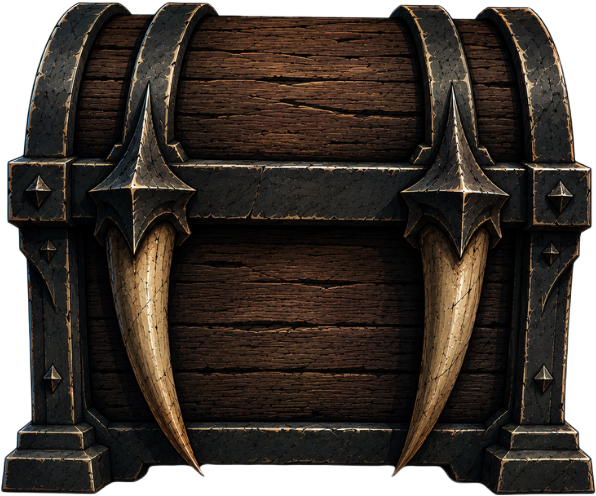
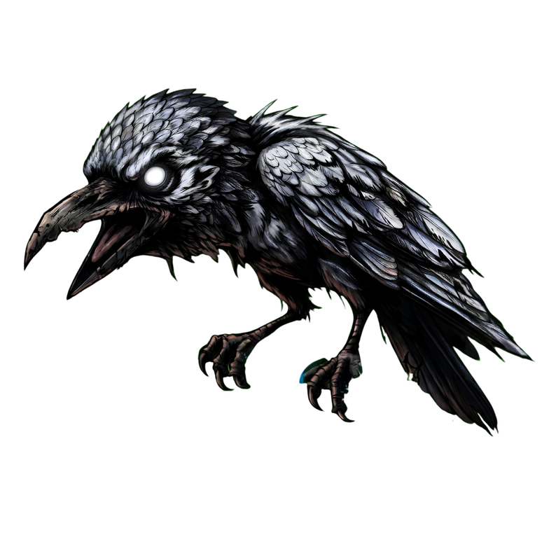
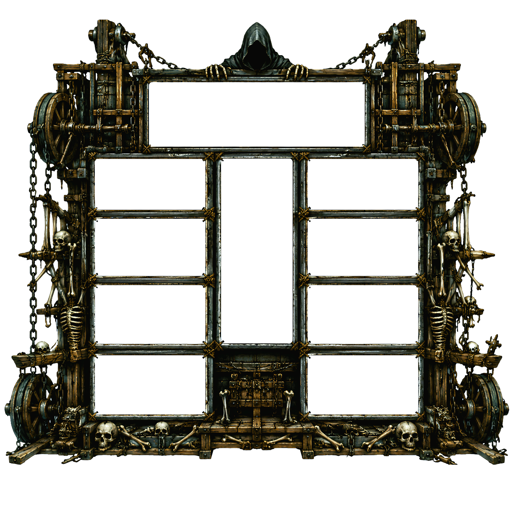
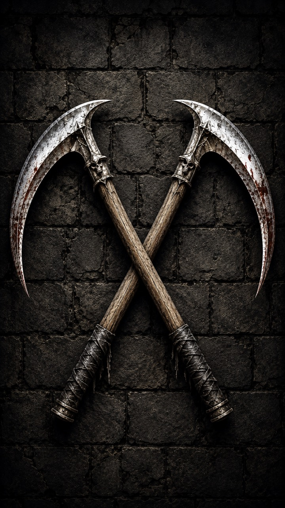
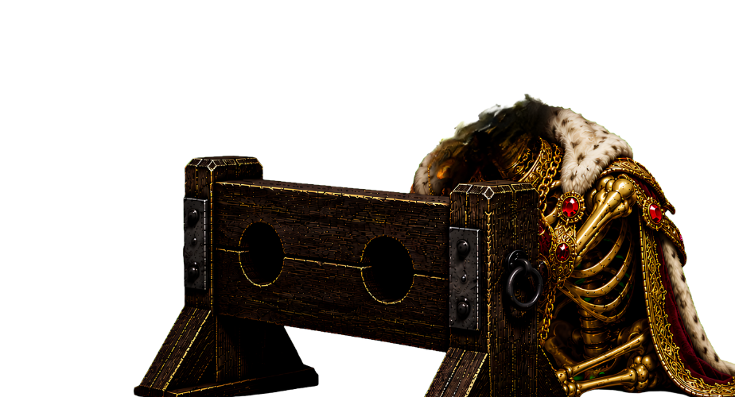
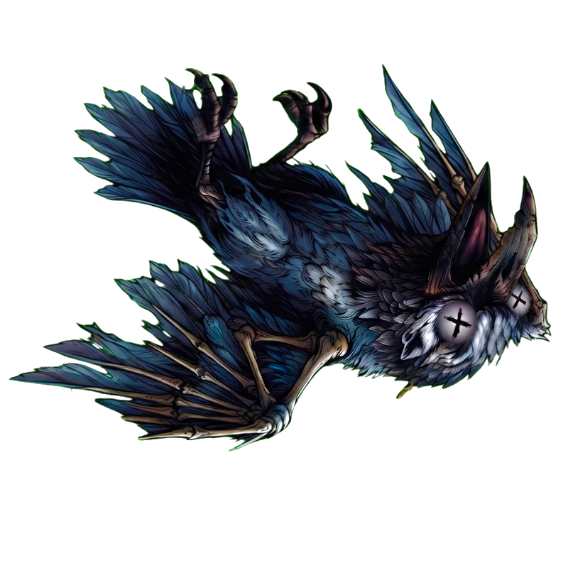
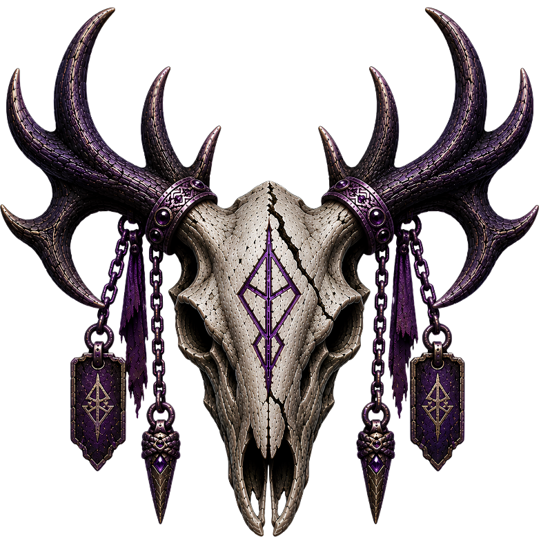

Guillotine Reels
Dark Fantasy Slot Game
A dark fantasy slot prototype built around a non-standard board, interacting reel systems and player-driven anticipation.
The Idea
Guillotine Reels started in a rather unconventional way. One day, while playing an online slot with some friends, we won a significant amount of money. The casino eventually closed our account without paying us. Out of frustration, I had a simple thought:
“Fine. I’ll make my own slot.”
But the idea quickly became something more. I didn’t want to make another generic slot. I wanted to create something different and niche, for people who genuinely enjoy dark fantasy: strange creatures, skeletons, mysterious environments and worlds with personality.
I wanted the player’s first reaction to be “What is this?” — something they didn’t immediately recognize, but that made them think: “I like this atmosphere.” “I like these visuals.” “I like these sounds.”
And from there, I wanted them to keep playing because they wanted to discover what else could happen, what secrets the game might hide, what they could win, and how they could get there. The guillotine, skeletons and ravens came later, as the project evolved.
Design Goals
One of my main goals was to make everything feel polished and clean. I didn’t want to fill the screen with things just because I could.
Every visual element, sound, animation and effect needed to earn its place.
I also wanted to build a world that felt connected, rather than simply a collection of elements sharing the same art style. The skeletons, ravens, guillotine, chest and different events should all feel like they belong to the same universe.

There is still a lot I want to develop here: more characters, relationships and small details that could gradually build a kind of story within the game. The project still has plenty of room to grow, but I’m proud of the foundation I’ve built.
Player Experience
The experience starts with a simple question: “What is this?” I want the player to enter, see something they don’t immediately recognize, and think: “Is this a slot?” “How does this work?” “I’ve never seen anything like this.” But at the same time: “This atmosphere is great.”
From there, the game gradually reveals its possibilities. A raven appears. A blade drops. A skeleton might show up. Something happens that the player wasn’t expecting. Little by little, they start understanding how the game works and what is possible. That’s when intrigue and anticipation begin.
A raven might appear without connecting a single payline, or several might create a completely different situation. Blades can accumulate and, suddenly, the chest opens. The player knows these things can happen, but doesn’t know exactly when.

Eventually, I want to leave the player with a little frustration: “Shit, I almost had it.”
Not the kind of frustration that makes them leave, but the feeling you get from a game you haven’t quite completed yet. I want to come back.
Game Systems
The starting point was to create a slot that didn’t work like a conventional slot. I designed a different board and reel structure, allowing the reels to interact with each other.
A blade can drop across the board. A skeleton can appear and throw a stone. The stone can hit or miss. Ravens can appear and completely change the situation. The chest gradually fills with blades, but the player never knows exactly when it will open.
“Is it going to happen?” “When?” “What happens if it does?”
I didn’t want the systems to feel like isolated mechanics. I wanted the board to feel like a space where things are actually happening.

Math & Balance
This is still an area I consider part of the project’s future iteration. The mathematical systems exist and were used throughout development, but I don’t consider the game’s final balance sufficiently closed to present it as a finished result.
I’d rather continue developing this part before treating it as a conclusion of the project.
Game Feel & Feedback
One of the biggest things I’ve learned during development is that every situation needs room to breathe. I think about this in a similar way to film: not everything needs to happen at the same time, and not every moment needs the same level of intensity.
Music plays a huge role in this. It is part of the experience both while the reels are spinning and when they are still. Rhythm, pauses, sound and animation all work together to determine how much weight a moment has.
And getting that balance right isn’t always easy. A lot of things worked technically, but simply didn’t feel right. That meant going back and adjusting them again.

Audio & Visual Design
The audiovisual direction starts with a simple idea: create a dark, strange and attractive world that the player wants to stay in. Skeletons, ravens, blood, guillotines, chests and other creatures all belong to the same visual identity.
Sound plays an equally important role. Individual events need to have their own weight, while the music helps maintain the feeling of being inside this world. I also removed elements that worked individually but added too much noise to the overall experience.
Everything should feel like it belongs to the same place.

Iteration & Problem Solving
Most of the development was iteration. At one point, I had to throw away almost the entire original reel structure because, although it worked, it didn’t feel right as an experience. It was a significant step backwards, but it ended up being one of the best decisions I made during the project.
Something similar happened throughout development: I would improve one part, and suddenly another part would feel weaker. I started thinking of these as little “mountains.”

I’d improve one, discover another that was weaker, go back, change things, remove elements that weren’t helping, and keep testing.
I learned to distinguish between something that could still be improved and something that fundamentally wasn’t working. If it’s the second one, I’d rather rebuild it, even if that means throwing away work I’ve already done.
My Role & AI-Assisted Development
Guillotine Reels is a project designed and directed by me. The concept, creativity, systems, visual style, audio direction and design decisions all came from my own ideas. I used AI as a support tool to organize, prototype and implement those ideas more quickly.
But the creative direction went down to the smallest details. If I wanted a raven, it wasn’t simply “make a raven.” I decided its style, size, proportions, position, behaviour and how it should fit into the rest of the world. The same applied to the board, blades, skeletons, animations, UI and practically every other element of the game.
AI allowed me to turn those ideas into something playable much faster, but the decisions about what should exist and how it should feel were mine.

AI was the implementation and prototyping tool. The creative direction and design decisions were mine.
What I Learned
Making this project taught me that designing an experience where a player can enjoy even when they lose is much harder than it sounds. It’s not simply about making the player win more. The way you present a loss, a near-miss or a reward that was almost there can completely change how the player feels.
I also learned that a mechanic can work perfectly and still not feel right. And when something fundamental doesn’t convince me, it’s worth going back and changing it, even if that means throwing away work I’ve already done.
There is still a lot I want to improve in Guillotine Reels, but I’m proud of what I’ve built.
The best way to understand the project is to play it.
Playable beta — personal game design project